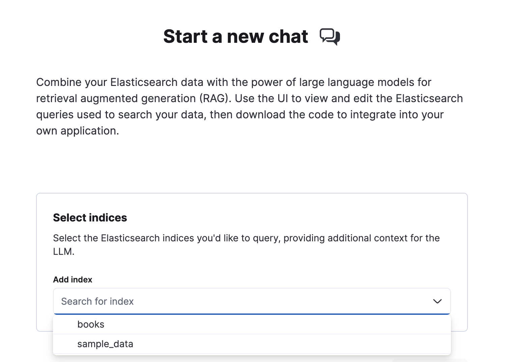

Playgroundedit
This functionality is in technical preview and may be changed or removed in a future release. Elastic will work to fix any issues, but features in technical preview are not subject to the support SLA of official GA features.
Use Playground to combine your Elasticsearch data with the power of large language models (LLMs) for retrieval augmented generation (RAG). The chat interface translates your natural language questions into Elasticsearch queries, retrieves the most relevant results from your Elasticsearch documents, and passes those documents to the LLM to generate tailored responses.
Once you start chatting, use the UI to view and modify the Elasticsearch queries that search your data. You can also view the underlying Python code that powers the chat interface, and download this code to integrate into your own application.
Learn how to get started on this page. Refer to the following for more advanced topics:
How Playground worksedit
Here’s a simpified overview of how Playground works:
- User creates a connection to LLM provider
- User selects a model to use for generating responses
-
User define the model’s behavior and tone with initial instructions
- Example: "You are a friendly assistant for question-answering tasks. Keep responses as clear and concise as possible."
- User selects Elasticsearch indices to search
- User enters a question in the chat interface
-
Playground autogenerates an Elasticsearch query to retrieve relevant documents
- User can view and modify underlying Elasticsearch query in the UI
-
Playground auto-selects relevant fields from retrieved documents to pass to the LLM
- User can edit fields targeted
-
Playground passes filtered documents to the LLM
- The LLM generates a response based on the original query, initial instructions, chat history, and Elasticsearch context
-
User can view the Python code that powers the chat interface
- User can also Download the code to integrate into application
Availability and prerequisitesedit
For Elastic Cloud and self-managed deployments Playground is available in the Search space in Kibana, under Content > Playground.
For Elastic Serverless, Playground is available in your Elasticsearch project UI.
To use Playground, you’ll need the following:
- An Elastic v8.14.0+ deployment or Elasticsearch Serverless project. (Start a free trial).
-
At least one Elasticsearch index with documents to search.
- See ingest data if you’d like to ingest sample data.
-
An account with a supported LLM provider. Playground supports the following:
Provider Models Notes Amazon Bedrock
- Anthropic: Claude 3.5 Sonnet
- Anthropic: Claude 3 Haiku
OpenAI
- GPT-3 turbo
- GPT-4 turbo
- GPT-4 omni
Azure OpenAI
- GPT-3 turbo
- GPT-4 turbo
Buffers responses in large chunks
Google
- Google Gemini 1.5 Pro
- Google Gemini 1.5 Flash
Getting startededit
Connect to LLM provideredit
To get started with Playground, you need to create a connector for your LLM provider. Follow these steps on the Playground landing page:
- Under Connect to LLM, click Create connector.
- Select your LLM provider.
- Name your connector.
- Select a URL endpoint (or use the default).
- Enter access credentials for your LLM provider.
If you need to update a connector, or add a new one, click the wrench button (🔧) under Model settings.
Ingest data (optional)edit
You can skip this step if you already have data in one or more Elasticsearch indices.
There are many options for ingesting data into Elasticsearch, including:
- The Elastic crawler for web content (NOTE: Not yet available in Serverless)
- Elastic connectors for data synced from third-party sources
-
The Elasticsearch Bulk API for JSON documents
Expand for example
To add a few documents to an index called
booksrun the following in Dev Tools Console:POST /_bulk { "index" : { "_index" : "books" } } {"name": "Snow Crash", "author": "Neal Stephenson", "release_date": "1992-06-01", "page_count": 470} { "index" : { "_index" : "books" } } {"name": "Revelation Space", "author": "Alastair Reynolds", "release_date": "2000-03-15", "page_count": 585} { "index" : { "_index" : "books" } } {"name": "1984", "author": "George Orwell", "release_date": "1985-06-01", "page_count": 328} { "index" : { "_index" : "books" } } {"name": "Fahrenheit 451", "author": "Ray Bradbury", "release_date": "1953-10-15", "page_count": 227} { "index" : { "_index" : "books" } } {"name": "Brave New World", "author": "Aldous Huxley", "release_date": "1932-06-01", "page_count": 268} { "index" : { "_index" : "books" } } {"name": "The Handmaids Tale", "author": "Margaret Atwood", "release_date": "1985-06-01", "page_count": 311}
We’ve also provided some Jupyter notebooks to easily ingest sample data into Elasticsearch. Find these in the elasticsearch-labs repository. These notebooks use the official Elasticsearch Python client.
Select Elasticsearch indicesedit
Once you’ve connected to your LLM provider, it’s time to choose the data you want to search. Follow the steps under Select indices:
- Select one or more Elasticsearch indices under Add index.
-
Click Start to launch the chat interface.

Learn more about the underlying Elasticsearch queries used to search your data in View and modify queries.
Set up the chat interfaceedit
You can start chatting with your data immediately, but you might want to tweak some defaults first.
You can adjust the following under Model settings:
- Model. The model used for generating responses.
- Instructions. Also known as the system prompt, these initial instructions and guidelines define the behavior of the model throughout the conversation. Be clear and specific for best results.
- Include citations. A toggle to include citations from the relevant Elasticsearch documents in responses.
Playground also uses another LLM under the hood, to encode all previous questions and responses, and make them available to the main model. This ensures the model has "conversational memory".
Under Indices, you can edit which Elasticsearch indices will be searched. This will affect the underlying Elasticsearch query.
Click ✨ Regenerate to resend the last query to the model for a fresh response.
Click ⟳ Clear chat to clear chat history and start a new conversation.
Next stepsedit
Once you’ve got Playground up and running, and you’ve tested out the chat interface, you might want to explore some more advanced topics: